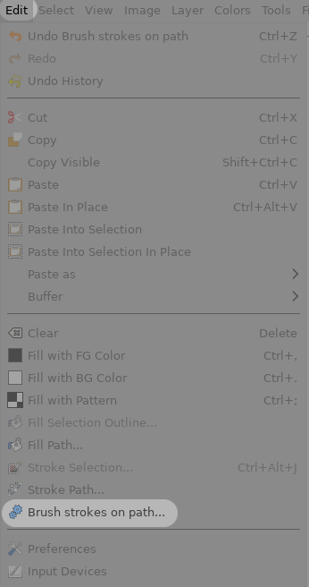

The script paints evenly spaced brush strokes along a path.
The script is called from the Brush strokes on path item in the Edit menu:

The script paints on the designated layer using the current path and current paintbrush settings, in particular:
Strokes: the number of brush strokes per path element (often also called "strokes"). When this number is given
the spacing is automatically computed.Spacing: the approximate spacing between brush strokes. This parameter is only taken in account if Strokes is zero.
The actual spacing value is the closest value that yields an integer number of strokes. For instance, on a 100px path,
a spacing of 21 is adjusted to 20 to yield exactly 5 intervals.Rotation: whether or not the brush is rotated to follow the local path orientation. This is in addition to the angle
of the brush as specified in the paintbrush options. The "top" is on the left of the path, so that brushes are upright
when painted with a 0° angle on a left-to-right horizontal path.